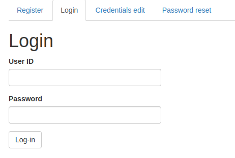
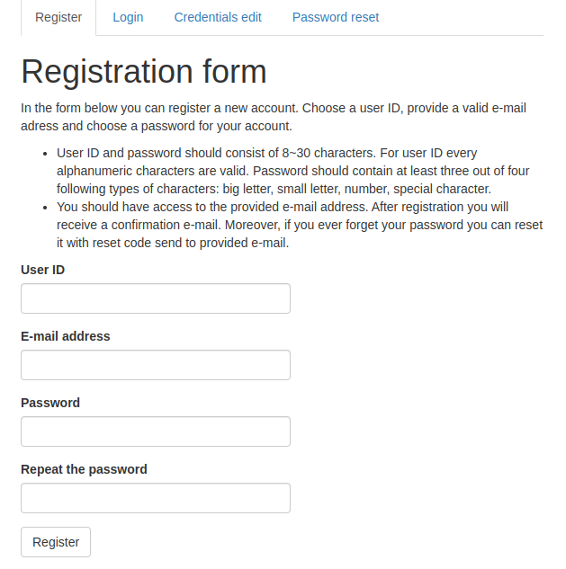
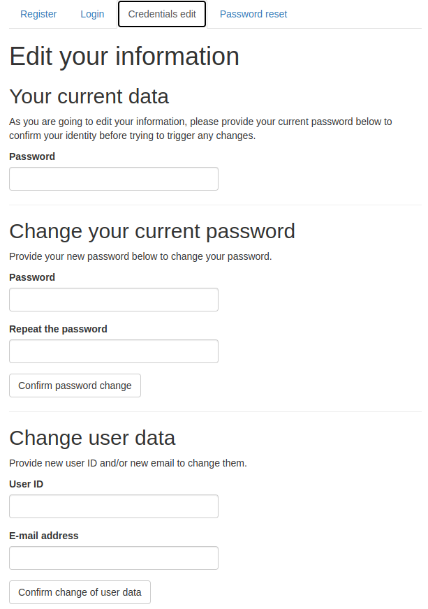
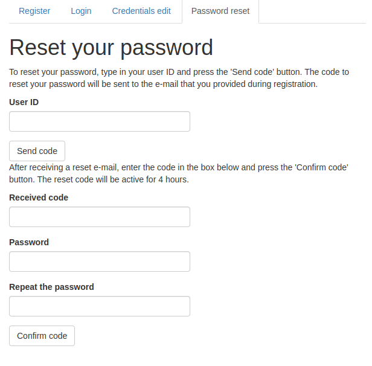

1. Introduction
The user authentication in Shiny applications can be very useful. Mainly, user can login to read and write some results of their session into relational database.
On the other hand, it may be handy for your App to allow access of unregistered users. If you need to secure your ShinyApp, there are better alternatives (shinymanager or shinyauthr)
This package contains modules to use in your Shiny application allowing you to automatically insert boxes for login, register, credentials edit and password reset and procedures.
shiny.reglog supports as data containers either databases accessed with RSQLite, RMariaDB, RMySQL and RPostgreSQL drivers or googlesheets-based database (accessed by googlesheets4 package).
It is highly recommended to use one of the DBI-supported databases, though. It is much more optimized and secure, as the database is never loaded as a whole into the memory, but queried as needed. googlesheets database is much easier to set-up, but it shouldn’t be used when you are expecting big userbase.
Registration, credentials edit and password reset procedures programmatically send email to the user of your ShinyApp - to welcome them, inform about change of their user ID and/or email and to give them a reset code to reset their password. shiny.reglog supports two methods of email sending: via emayili or gmailr packages. Both of them have their pros and cons, depending on your accesses: emayili allows for usage of many SMTP servers, while gmailr allowing using gmail messaging via Google REST API.
The emayili is recommended for most applications. gmailr can be useful if you already have application registered and authorized with mail sending scope.
Currently the package is after major change in its code - basically full rewrite to allow more security, usage of more databases and more customization. Past functions are still available in current version, but will generate deprecation warnings.
2. Additional information
Basic information about shiny.reglog is contained within this document. There are some more resources to learn about its usage:
- You can access demonstration shinyApp with showcase mode on shinyapps.io
- You can run interactive demo in your own RStudio by using
RegLogDemo()function. It will use mocked mailConnector by default or RegLogEmayiliConnector if you provide it arguments required byemayilibackend. - For more information read vignettes.
3. Basic structure
There are three main objects that are to be used when implementing RegLog system for login and registration in your ShinyApp. All of them need to be defined in the server code.
-
dbConnector: one of
RegLogDBIConnectororRegLogGsheetConnector. It will handle all writes, edits and inputs to the users database. -
mailConnector: one of
RegLogEmayiliConnectororRegLogGmailrConnector. It will handle all automatical emailing to the user emails. - RegLogServer: The main module producing and controlling all of UI and reactivity of the login and registration system. It uses dbConnector and mailConnector for actions external of R.
4. Installation
You can install this version of shiny.reglog from GitHub with:
# install version 0.5.0 from GitHub
install.packages("devtools")
devtools::install_github("StatisMike/shiny.reglog")
# or install old version from CRAN
# install.packages("shiny.reglog")5. Setting up dbConnector
You need to create dbConnector object to be used by the RegLogServer to write and read user data from the database.
To set-up the database for RegLog system, you can use helper functions included in this package. They are tested and guarantee compatible structure of the data.
5.1 Googlesheet database method (RegLogGsheetConnector)
- Create googlesheet file on your googledrive to support database. You can use
gsheet_tables_create()function, which by default creates empty spreadsheets configured correctly.
# create googlesheet and gather its id for later usage
# you can also specify optional 'name' argument for custom gsheet name
gsheet_id <- gsheet_tables_create()
# save you gsheet_id - you need to provide it later to your dbConnectorIf you wish to import some existing credentials, you can do it by giving the data.frame object to the user_data argument:
# get some credentials
credentials <- data.frame(
username = "ShinyReglogTest",
password = "VeryHardPassword",
email = "shinyreglog@test"
)
# create gsheet database with some credentials
gsheet_id <- gsheet_tables_create(
user_data = credentials,
# as the password was not hashed with `script` before, it need to be
# hashed now
hash_passwords = T)Configure googlesheets4 package to use out-of-band (non-interactive) auth. For more information about it visit googlesheets4 documentation.
In the
serverpart of your ShinyApp defineRegLogGsheetConnectorto provide it afterwards to theRegLogServerobject
server <- function(input, output, session) {
dbConnector <- RegLogGsheetConnector$new(
gsheet_ss = gsheet_id)
}5.2 DBI compatible SQL database (RegLogDBIConnector)
RegLog system out of the box supports SQLite, MySQL, MariaDB and PostgreSQL databases. You can use DBI_tables_create function, which by default creates empty tables configured correctly.
# create a connection to the database. Remember to use user with CREATE TABLE
# scope enabled when useing MySQL, MariaDB or PostgreSQL connection
conn <- DBI::dbConnect(
RSQLite::SQLite(),
dbname = "reglog_db.sqlite"
)
# using this connection create the tables.
DBI_tables_create(conn = conn)
# disconnect from the database after creation
DBI::dbDisconnect(conn)If you wish to import some credentials, you can do it by providing the data.frame object to the user_data argument:
# get some credentials
credentials <- data.frame(
username = "ShinyReglogTest",
password = "VeryHardPassword",
email = "shinyreglog@test")
conn <- DBI::dbConnect(
RSQLite::SQLite(),
dbname = "reglog_db.sqlite"
)
# create database using the connection
DBI_tables_create(conn = conn,
user_data = credentials)
DBI::dbDisconnect(conn)- In the server part of your ShinyApp define
RegLogDBIConnectorto provide it afterwards to theRegLogServerobject.
server <- function(input, output, session) {
dbConnector <- RegLogDBIConnector$new(
driver = RSQLite::SQLite(),
dbname = "reglog_db.sqlite")
}6. Setting up mail connectors
You need to create mailConnector object to be used by the RegLogServer to write and read user data from the database. There are two classes defined to use emayili or gmailr packages as backend.
6.1. Using emayili (RegLogEmayiliConnector)
This backend is recommended to use. It supports many SMTP servers, mostly with username and password based identification.
server <- function(input, output, session) {
mailConnector <- RegLogEmayiliConnector$new(
from = "email@sending.com",
# to learn how to setup emayili smtp server read ?emayili::server
smtp = emayili::server(...)
)
}6.2. Using gmailr (RegLogGmailrConnector)
This backend is only viable if you have an app registered in Google Cloud Console. It authorizes and sends email via gmail REST API, needing Oauth authorization with high scopes.
server <- function(input, output, session) {
mailConnector <- RegLogGmailrConnector$new(
from = "email@gmail.com"
)
}7. Setup RegLogServer
All of RegLog system is generated and maintained by the object of class RegLogSystem in unison with dbConnector and mailConnector of your choosing.
Its setup is pretty straightforward:
server <- function(input, output, session) {
RegLog <- RegLogServer$new(
# both of these elements need to be defined firstly or in this call
dbConnector = dbConnector,
mailConnector = mailConnector
)
}Besides these two mandatory arguments, there are also some additional arguments to be used for customization.
-
app_name: your application name. It will be used within emails send to users. If not specified, the name of the folder containing you application files will be used. -
app_address: URL address to your application. It will be used within emails send to users. If not specified, the email address contained within session$clientData will be used. -
lang: language to be used in UI elements and send emails. Defaults to ‘en’ for English. Currently also ‘pl’ for Polish is supported. Besides that, you can also specify ‘i18’ to generate only text indicators - external methods can be used to parse the message in given language can be then used (eg.shiny.i18npackage). -
custom_txts: named list with character strings of custom texts to be used by the system. For more information call?RegLog_txt. -
use_modals: either boolean indicating if all default modalDialogs should be shown or named list ofFALSEvalues inhibiting specific ones. For more information read RegLogServer object fields and methods, section Message. All modals are listed there alongside conditions of their appearance. -
module_id: character string with ID of the module. Recommended to leave as default - unless if that name is taken by another module.
7.1. Retrieve information from RegLogServer
After setting up and assigning the object your application logic can observe status of user in current session by public fields containing reactiveVal objects.
## if you assigned the RegLogServer to 'RegLog' object, as in examples above:
# boolean showing if the user is logged in:
RegLog$is_logged()
# character vector containing user ID: either specific to the user if logged
# in, or unique anonymous ID generated with 'uuid::UUIDgenerate()'
RegLog$user_id()
# character vector containing user email if logged in
RegLog$user_mail()
# integer of the account ID inside the database - for identifying the logged user
# across relative tables
RegLog$account_id()There are much more to be learned about RegLogServer object - for more information read RegLogServer object fields and methods. Above information is enough for basic setup.
8. Insert UI elements
Every part of the UI is generated by RegLogServer, and could be accessed by provided functions containing tagList.
8.1. Login UI
Providing GUI to allow logging in if user is already registered to your application.

8.2. Register UI
Providing GUI for registering new account.
- Both user ID and e-mail needs to be unique within the databasa
- user ID need to consist of 8-30 alphanumeric characters
- user password need to consist of 8-30 characters. It needs to contain characters of at least 3 of 4 following groups:
- small letter
- big letter
- number
- special character
- user email is also validated
After account registration, user will receive confirmation email on their password.

8.3. Credentials edit UI
Providing GUI for changing credentials.
- user need to be logged in to change their data
- to confirm their identity, they need to provide their current password
- user can change either during one interaction:
- password
- user ID and/or e-mail
- same checks as in register procedure are conducted
- after user ID and/or e-mail change user will receive confirmation e-mail

8.4. Reset password UI
Providing GUI for password reset.
- in the case of user forgetting their password, they can reset it by providing their user ID
- mail message containing reset code will be sent to the user
- inputing the reset code from e-mail will allow password change
- same password check for new password is conducted as in register procedure
